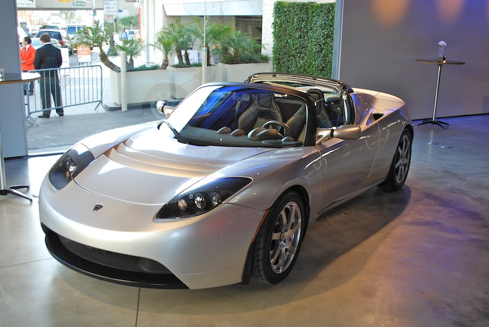
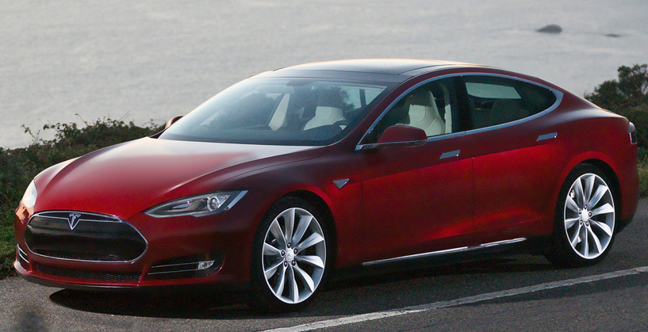
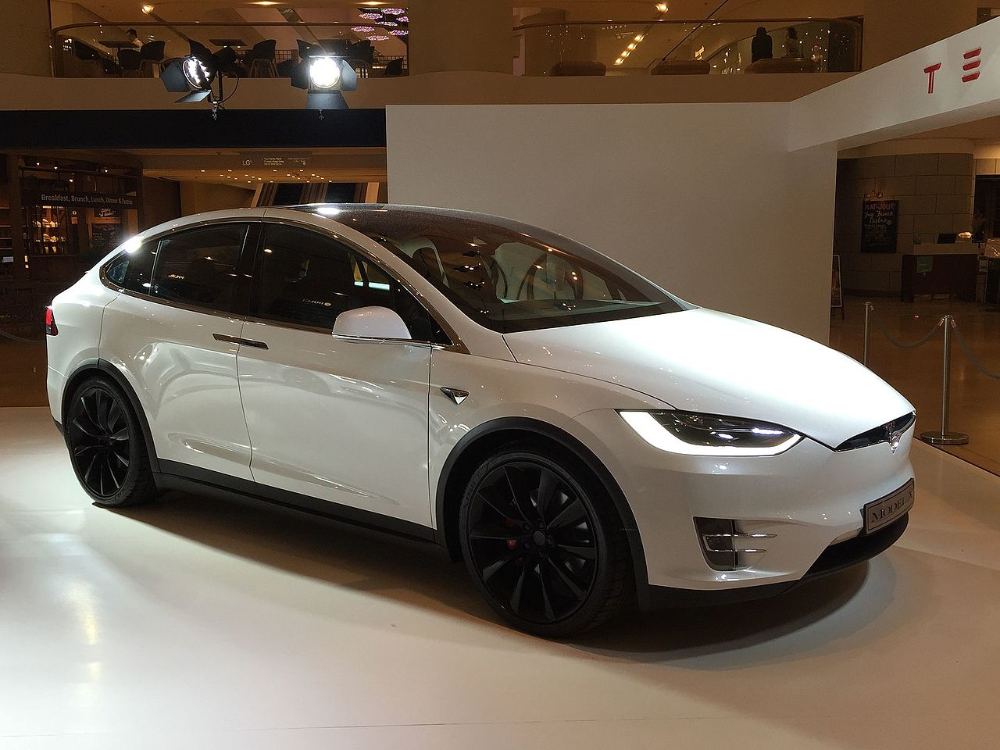
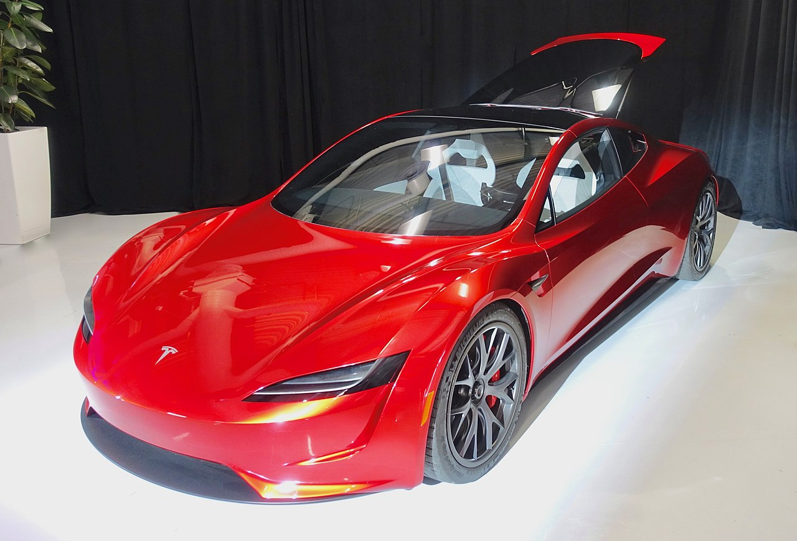
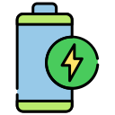

Tesla (ранее Tesla Motors)
Tesla (ранее Tesla Motors) — американская компания, производитель электромобилей и решений (см. SolarCity) для хранения электрической энергии. Компания была основана в июле 2003 года Мартином Эберхардом и Марком Тарпеннингом, но нынешнееруководство компании называет сооснователями Илона Маска, Джеффри Брайана Страубела и Иэна Райта. В 2019 году Tesla стала крупнейшим производителем электромобилей в мире. Седан Tesla Model 3 стал самым продаваемым электромобилем в истории, преодолев отметку 800 тысяч. В 2021 году Tesla вышла на первое место по капитализации среди автомобильных компаний, обойдя японского автопроизводителя Toyota. В конце октября 2021 года капитализация Tesla впервые превысила 1 трлн долларов, ранее этой отметки достигали только 4 американские компании (Apple, Microsoft, Amazon и Alphabet). Названа в честь всемирно известного электротехника и физика Николы Теслы.
История
Компания Tesla (основанная как Tesla Motors) была зарегистрирована 1 июля 2003 года Мартином Эберхардом и Марком Тарпеннингом. Ян Райт был третьим сотрудником Tesla, присоединившимся к ней несколько месяцев спустя. В феврале 2004 года трое основателей привлекли инвестиции в размере 7,5 млн долларов США, при этом Илон Маск внес 6,5 млн долларов. Маск стал председателем совета директоров и назначил Эберхарда генеральным директором. Целью Tesla было начать со спортивного автомобиля премиум-класса, ориентированного на первых пользователей, а затем перейти к более массовым автомобилям, включая седаны и доступные компактные автомобили. Прототипы первого автомобиля Tesla были официально представлены публике 19 июля 2006 года в Санта-Монике (Калифорния). В 2006 году Маску удалось, проведя несколько раундов финансирования от инвестиционных фондов и известных предпринимателей (включая соучредителей Google), привлечь 100 млн долларов. В результате Tesla начала производство своей первой модели Roadster в 2008 году.
Модельный ряд
Tesla Roadster
Спортивный электромобиль, первый автомобиль фирмы. Официальная презентация состоялась 19 июля 2006 года в городе Санта-Моника, Калифорния. Tesla Motors провела конкурс для выбора вида запланированных двух Tesla Roadster, выданных британским производителем спортивных автомобилей Lotus. Автомобили были получены. Первые 1000 Tesla Roadster были сделаны в течение одного месяца. Цена одного автомобиля составила 100 000 долларов США. Серийное производство началось в марте 2008 года. Эта модель продавалась до 2012 года, поскольку контракт с Lotus на поставку 2500 машин истёк в конце 2011 года. Компания перестала принимать заявки на американском рынке в августе 2011 года. Следующее поколение этой модели планировалось представить в 2019 году.
Tesla Model S
Концепт автомобиля был представлен 26 марта 2009 года в городке Хоторн, Калифорния. Пятидверный хетчбэк разрабатывается под прежним условным обозначением «Whitestar» фирменным филиалом в Детройте. После окончания проектно-конструкторских работ фабрика должна производить в Калифорнии первоначально 10 000, позже — 25 000 автомобилей модели. Поставка автомобилей в США началась 22 июня 2012 года. Изначально предлагалось две версии: на 60 и 85 кВт⋅ч, оборудованные одним электродвигателем, расположенным на задней оси. Затем, 9 октября 2014 года, появилась опция с электродвигателями на каждой оси, а уже с 8 апреля 2015 года компания полностью отказалась от однодвигательной комплектации и от 60 кВт⋅ч версии. С этого времени все выпускающиеся машины оборудованы двумя электродвигателями, полным приводом и в базовой версии оснащаются 70 кВт⋅ч батареей. Стартовая цена начинается от 75 750 долларов в США. В зависимости от комплектации, без перезарядки автомобиль сможет проехать 442, 502 и 480 километров.
Tesla Model X
9 февраля 2012 года компания представила прототип новой модели — кроссовер под названием Tesla Model X. Тогда же Илон Маск заявил, что производство модели планируется начать в 2013 году. Изначально планировалось, что в конце 2014 года будут поставлены небольшие партии, а полноценный выпуск модели начнётся в 2015 году. Однако в феврале 2014 года было заявлено, что начало поставок ожидается только во втором квартале 2015 года. В ноябре начало поставок было вновь перенесено, на этот раз на третий квартал 2015 года. По сравнению с Model S внесены следующие изменения: добавлен 3-й ряд сидений, автоматически открывающиеся задние двери вверх для входа пассажиров во 2-й и 3-й ряд, возможность заказать модель с двумя моторами. В 1-м квартале 2016 года было продано 2400 Tesla Model X.
Tesla Roadster 2
Второе поколение электромобиля Tesla Roadster анонсированное в ноябре 2017 года. Среди основных характеристик автомобиля были заявлены: максимальная скорость — свыше 400 км/ч, время разгона с 0 до 96.5 км/ч — 1,9 секунды, максимальный пробег на одной зарядке — до 1000 км. Старт серийного производства ожидается в 2022 году.
Производственные мощности
В США | Tesla Factory — завод во Фримонте (Калифорния) (ранее назывался NewUnitedMotorManufacturing, Inc (NUMMI) и был совместным предприятием General Motors и Toyota, был открыт в 1984 году; Tesla Motors купила его у Toyota в 2010 году за 42 млн долл.). Завод аккумуляторов Gigafactory 1 в Неваде — самый большой в мире — будет с 2020 года производить для электромобилей 500 тыс. батарей.